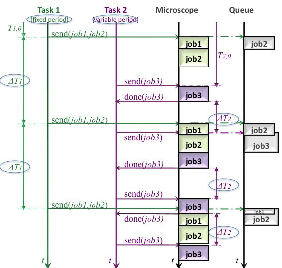

Definition of Measurement Tasks

While in a microplate measurement the jobs for one task have to be selected in the Definition of the Measurement Tasks, in advanced measurement several tasks containing several jobs can be combined. The advantage is that several tasks can run in parallel and send their jobs to the queue. The microscope executes the jobs in the queue. The button New Task opens a Task window. This task can be filled with the same imaging jobs like in microplate measurement. But in addition there is the possibility to measure the period measured from (i) End job i->Start job i+1 or (ii) Start job i ->Start job i+1, which correspond to variable or fixed period of a task, respectively. The period length of the task has to be defined and a set of jobs have to be selected for each task.
|  | Figure 1: Flowchart of an advanced measurement. The execution of the task with fixed period and a variable period by the microscope is plotted. Task 1 and task 2 are printed in green and prink, respectively. The queue and the execution by the microscope are plotted in grey. The feedback of task 2 is displayed in light pink. The length of the fixed period of task 1 is ΔT1 and the length of the period of task 2 is ΔT2. Both are highlighted by the ellipse. |
In Definition of Measurement tasks the jobs can be selected
The jobs are identical to the jobs in microplate measurement and are detailed described in the section Imaging Procedure in each Well or Position.
{kind=link}